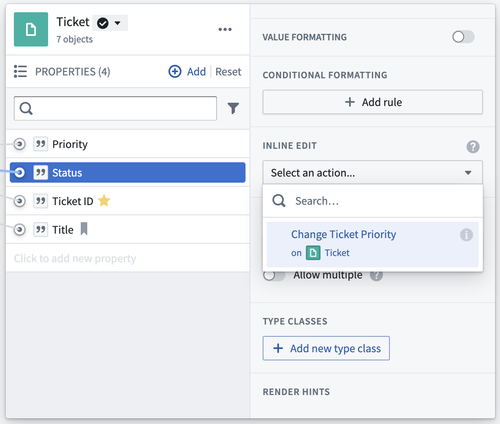

Action-backed inline edits are validated and submitted differently than standard actions. For standard actions, multiple parameters need to be set in order for the action to be valid. However, for action-backed inline edits, every parameter is optional and defaults to the existing value of the object, so a user can make individual changes to properties one at a time.
This documentation discusses how to avoid unexpected results when using inline edits. Inline edits are available in both Workshop and Object Explorer. The configuration of the inline edit action depends on where the action is used.
Inline edits allow users to quickly edit values of an object in the Object Explorer results view or native Object View widgets, like the property or metric cards widget.

To set up an inline edit action, navigate to the Properties tab of your object type and then to the Interaction tab in Ontology Manager. Select a property and navigate to Inline edit in the sidebar. In the dropdown menu, select one of the available action types or create a new one. Creating a new one will trigger the action type creation workflow. Each property can have only one inline edit action type.
You can use the same action type as an inline edit for multiple properties, or you can have separate action types for different properties.
Not all action types can be used as inline edit action types. To be accepted, the action type must meet the following requirements:
No additional configuration is required to use an action type as an inline edit in Workshop, but not all actions are suitable for cell-level editing. For information on how to configure inline edits, see the Workshop documentation.
When running a single action, edits are validated and submitted one at a time (sequentially). Inline edits differ in that they are validated and submitted in bulk. Because of this, not all actions are suitable for inline edits. Actions that may fail or have unexpected results due to inline edits include:
:::callout{theme="neutral"} When inline edits are applied to a Scenario, the submitted actions are applied sequentially (in a non-deterministic order) rather than simultaneously (as is normally the case with inline edits). As a result, inline edit actions that ordinarily fail due to multiple actions trying to write to the same object may succeed when applied to a scenario, though we do not recommend building applications that depend upon this difference in behavior. :::
Actions must submit non-conflicting edits to be effective as Action-backed inline edits. In practice, this means multiple Actions configured in the same table edit widget must not:
Actions will return an error if an inline edit attempts to edit the same object twice. Also, adding or deleting join table links is not supported by inline edits and will result in a user-facing error message.
As users apply inline edits, submission criteria will be applied to each edit, but the edits will be submitted in bulk. Both parameter and global submission criteria will be evaluated for each edited object, but submission criteria that reference shared or linked objects are not compatible with inline edits. This is because when applying inline edits, cumulative submission criteria compare the edited value to the unedited values for the column. At final submission, the edits will be submitted all at once and will succeed if they all pass parameter and global submission criteria for the corresponding object.
Submission criteria on objects shared between multiple Action types or linked objects are therefore evaluated once per edit, before any edits are made.
:::callout{theme="warning"} Submission criteria that reference shared Action types or linked objects are not compatible with inline edits, and bulk updating objects could violate submission criteria rules that work as expected when applied sequentially (one at a time). :::
Imagine a Delay Flight Action that can delay a single flight by a maximum of 20 minutes at an airport that can delay all flights by a maximum of 50 minutes.